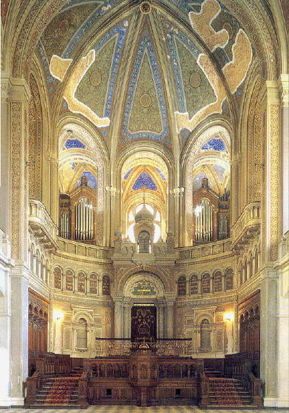
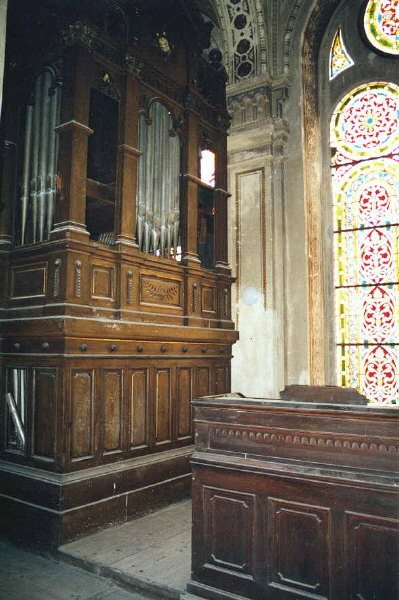
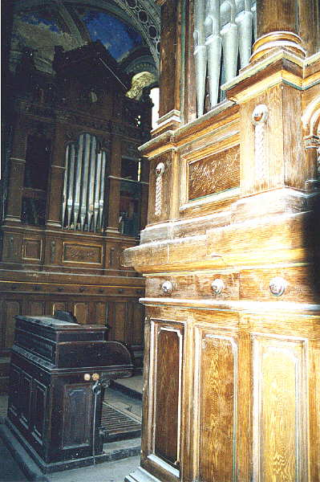
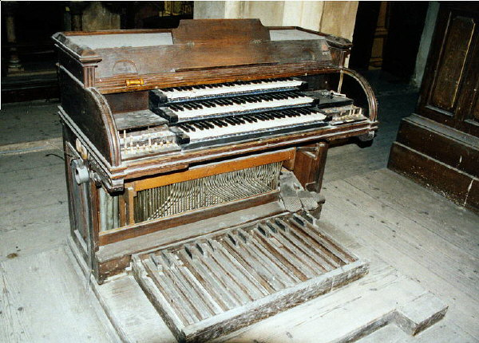
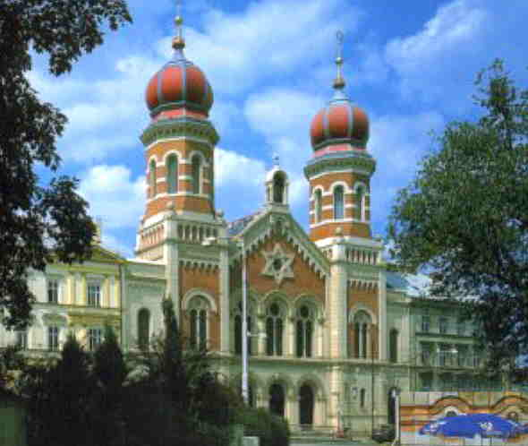

Varhany ve Velké synagoze v Plzni

Varhany v plzeňské synagoze byly postaveny roku 1890 bratry Braunerovými z Uničova. Nástroj má tři manuály a pedál, udávaná romantická dispozice odpovídá době jeho vzniku. Varhany měly (vzhledem k současnému stavu nástroje - viz. dále - jen odhadem podle hracího stolu) celkem přes 30 rejstříků, rozsah manuálů C - f3, rozsah pedálu C - dis1. Varhany mají pneumatickou trakturu (jedná se o jednu z prvních konstrukcí tohoto typu u nás) a smíšenou konstrukci vzdušnic. Nástroj v sobě skrývá mnoho pozurohodností, bratři BraBraunerové byli vyhlášeni svým novátorstvím, ve svých nástrojích často experimentovali a prosazovali mnoho nových postupů i řešení (právě v těchto varhanách najdeme např. trojboké dřevěné píšťaly, skládané do řady s lábii střídavě dopředu a dozadu, cílem byla značná úspora místa i při poměrně široké menzuře). Nástroj je umístěn na varhanním kůru v přední části hlavní lodi synagogy v prostoru nad svatostánkem. Je rozdělen do dvou samostatně stojících skříní (zcela oddělená C a Cis strana nástroje) se čtvercovým půdorysem 2,5x2,5m. Každá ze skříní má dva prospekty - větší, složený ze tří polí na přední a menší s jedním polem píšťal na vnitřní straně (zde byly obě krajní pole kryty vyřezávanou průzvučnou mřížkou). Vzdušnice jednotlivých manuálů jsou umístěny částečně nad sebou, částečně za sebou s pedálovými stroji zadní části skříní. Masivní skříně jsou zdobeny střídmými řezbami s rostlinnými a ornamentálními motivy (olivové ratolesti či piniové šišky - židovská víra nedovoluje zobrazování osob) a v horní části zakončeny velkou prořezávanou Davidovou hvězdou. Celkové uspořádání varhan respektuje architektonické řešení synagogy a dává vyniknout velkým zdobeným oknům v jejím průčelí. |
|  |  |
|
Pohled na uspořádání nástroje
na kůru. Ve spodní části levé skříně je vidět polámané píšťaly, v horní
části chybí část prospektů a vyřezávané průzvučné mřížky...
|
|
Hrací stůl varhan je umístěn v prostoru mezi skříněmi
a otočen čelem do prostoru synagogy. Jeho konstrukce je standardní,
zajímavé je ale umístění ovládání rejstříků vedle prvního manuálu. Hrací
stůl je ve velmi špatném stavu, chybí jak některé jeho konstrukční části
tak i rejstříkové rukojeti s popisem rejstříků. |
|  |
|
Hrací stůl. Je vidět část rourek
traktury i ulámané rejstříkové rukojeti po stranách prvního manuálu.
|
Varhany jsou po několika desetiletích nepoužívání
nefunkční. Obnova synagogy začala až v devadesátých letech minulého
století, předtím sloužila jako skladiště. Kromě poškozeného hracího
stolu jsou poničeny i varhanní skříně a vlastní nástroj. Relativně v
pořádku jsou jen vzdušnice a traktura (alespoň co se kompletnosti týče).
Chybí část prospektových píšťal, částečně prořídlé jsou i řady píšťal
uvnitř nástroje, je prasklý měch atd. Oprava je plánována na příští
léta a její cena se bude pohybovat okolo dvou miliónů korun. |
|  |
|
Velká synagoga v Plzni
|
Velká synagoga v Plzni je druhou největší synagogou ve střední Evropě (největší je v Budapešti). Její půdorys měří 56x30m, výška věží činí 45m. Byla vystavěna v maurském stylu, který byl vnímán jako protipól křesťanské gotiky. Základní kámem byl položen 2. prosince 1888, dokončena byla v roce 1892, v letech 1994 až 1998 byla provedena její celková rekonstrukce. Původní plány synagogy navrhl vídeňský architekt Fleischer. Synagoga měla být vestavěna ve stylu severské gotiky s vysokým průčelím a dvěmi štíhlými věžemi o výšce až 65 metrů. Stropní žebrová klenba se měla skládat ze železných žeber a žulových sloupů. Tehdejší městská rada však tento projekt zamítla. Radní odmítli styl stavby, protože se jim zdál příliš podobný stylu křesťanských kostelů. Oficiálním důvodem však byly věže, které byly příliš vysoké a nevhodně by tak soupeřily s věží kostela sv. Bartoloměje. Nové plány byly předloženy Emanuelem Klotzem, který zachoval půdorys a celkovou koncepci stavby, změnil však architektonický styl. Také věže v jeho návrhu byly sníženy o dvacet metrů. V tomto projektu se také objevily prvky románského stylu a upravené verze monumentalistické novorenesance (převážně v bočních chodbách), výzdoba byla navržena s orientálními ornamenty. Vzhled realizované stavby se snaží zdůraznit skutečnost, že nejde o křesťanský kostel. Vyvrcholením věží jsou Davidovy hvězdy, které byly na začátku války sneseny, ukryty (a nyní nalezeny pod uhlím v kotelně a instalovány zpět). Výstavba synagogy byla financována z dobrovolných finančních darů členů židovské obce. Synagoga sloužila svým účelům až do Holocaustu. Na počátků 2. světové války měla být zničena, tak jako řada jiných synagog. Zachránila ji zřejmě poloha mezi domy a také potřeba skladovat konfiskovaný židovský majetek. Stala se velkým bazarem, kde se prodávalo vybavení z židovských domácností i jiných synagog. Po vyprázdnění zde byla zřízena dílna na šití německých vojenských uniforem. Po 2. světové válce byla navrácena židovské komunitě, která však byla zdecimována Holocaustem a emigrací do Izraele a jiných zemí. Poslední pravidelná bohoslužba se zde konala v roce 1973. V letech normalizace byla synagoga uzavřena a chátrala až do devadesátých let minulého století. Od roku 1995 je intenzívně opravována. |